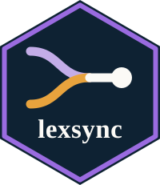

Experiments, paradigms and EEG triggers
Source:vignettes/experiments-and-triggers.Rmd
experiments-and-triggers.RmdOnce a stimulus set exists, something has to present it.
lexsync generates that experiment from a declarative
description of the trial, sparing the hand-coding that usually follows
selection. A trial is a list of events, each event says what appears and
for how long and whether a hardware trigger rides on its onset, and each
presentation target is an interpreter of that same list. The arrangement
is what lets one engine serve several paradigms and three targets: a new
paradigm is a new event list, not new backend code.
This vignette covers the event model, the paradigm registry, the three targets and how they differ, the trigger timing that motivates the design, and how to add a paradigm. It runs on the bundled English example lexicon and writes everything to a temporary directory.
library(lexsync)
schema <- yaml::read_yaml(
system.file("extdata", "schema.yaml", package = "lexsync")
)
lex <- load_lexicon(
system.file("extdata", "en_example.csv", package = "lexsync"),
schema, language = "english"
)
pool <- build_pool(lex, list(length = c(3, 7), frequency = c(3.8, 7.0)))
design <- list(
name = "vignette_experiment", language = "english", n_per_condition = 12,
paradigm = "factorial",
conditions = list(
list(name = "high", define_by = list(frequency = c(5.2, 7.0))),
list(name = "low", define_by = list(frequency = c(3.8, 4.4)))
),
match_on = list("length", "n_density", "old20"),
counterbalance = list(lists = 1)
)
stim <- match_stimuli(pool, design, schema)
stim <- counterbalance(stim, design, schema)
head(stim[, c("trial", "list", "set", "condition", "word")], 3) trial list set condition word
1 1 1 1 low myth
2 2 1 7 high head
3 3 1 4 high buyThe trial-event model
A design’s trial is a list of events. Each event is a plain list
whose type selects the behaviour and whose remaining fields
parameterise it. The factorial paradigm’s default sequence is a fixation
cross, the word, a response window and a blank.
events <- resolve_events(design)
str(events)List of 4
$ :List of 3
..$ type : chr "fixation"
..$ content : chr "+"
..$ duration_frames: int 30
$ :List of 5
..$ type : chr "text"
..$ content : chr "{word}"
..$ duration_frames: int 48
..$ trigger : chr "condition"
..$ onset_locked : logi TRUE
$ :List of 3
..$ type : chr "response"
..$ keys : chr [1:2] "left" "right"
..$ timeout_ms: int 2000
$ :List of 2
..$ type : chr "blank"
..$ duration_frames: int 15resolve_events() is the accessor the backends use, and
it embodies the precedence rule: a design’s own events list
wins, and only if there is none does the design inherit its paradigm’s
default sequence. The eight event types are fixation,
text, mask, blank,
region_by_region, response,
question and feedback. The first four draw
something (or nothing, for blank) for a fixed number of
frames. response and question collect a
keypress. region_by_region presents a segmented sentence
one region at a time, advancing on a key. feedback scores
the keypress just collected and reports it, and is described under
practice blocks below.
Durations are given in milliseconds, as duration_ms.
That is the unit a methods section reports and the unit all three
targets present, so a design means the same interval wherever it runs. A
visual stimulus can still only appear on a refresh, so the PsychoPy
script measures the display’s refresh rate when it starts and converts
each duration into the nearest whole number of flips: 50 ms is three
flips at 60 Hz and seven at 144 Hz. The trigger stays bound to the flip,
and the residual quantisation is reported.
A duration may also be given as duration_frames, which
designs written before this change still use. A frame count is converted
to milliseconds when the design loads, at
presentation.assumed_refresh_hz in the schema (60 by
default), so it means the rate the count was written for, whatever rate
the experiment then runs at. The timeout_ms of a response
window has always been in milliseconds, because a response deadline is
not tied to the refresh.
Content and field references
An event’s content is either a literal or a reference to
a column of the trial table. A reference is a single field name in
braces, and it is what makes an event list a template: one list serves
every trial in the design.
lapply(events[1:2], function(ev) ev$content)[[1]]
[1] "+"
[[2]]
[1] "{word}"The fixation event’s content is the literal +, which
every trial shows. The text event’s content is {word}, so
each trial shows its own row’s word column.
required_fields() resolves the references into the columns
a design’s items must actually carry, which is how a design’s item table
is validated before anything is generated.
required_fields(design)[1] "word"
required_fields(list(paradigm = "priming"))[1] "prime" "target"
required_fields(list(paradigm = "self_paced_reading"))[1] "sentence" "question"Presented strings are always carried as data. Each target writes a
trial table and reads the strings from it at run time, and they are
never interpolated into generated code. That is why an apostrophe in a
stimulus cannot break a generated script, and it is enforced on the way
in: load_items() rejects control characters and over-long
values in the fields a paradigm presents.
Triggers on an event
An event may carry a trigger. Three forms are accepted,
and the choice of form is the choice of what the EEG marker will
mean.
priming_events <- PARADIGMS$priming$events
or_dash <- function(x) if (is.null(x)) "-" else as.character(x)
data.frame(
type = vapply(priming_events, function(e) e$type, character(1)),
content = vapply(
priming_events, function(e) or_dash(e$content), character(1)
),
trigger = vapply(priming_events, function(e) or_dash(e$trigger), character(1))
) type content trigger
1 fixation + -
2 text {prime} 20
3 mask ##### -
4 text {target} condition
5 response - -
6 blank - -The literal integer 20 on the prime marks every prime with the same
code, since what is being timestamped is the prime’s appearance,
whichever prime it is. The token "condition" on the target
resolves per trial to that trial’s condition code, which is the marker
an ERP analysis will epoch on. The token "item" resolves to
a per-item code. Events with no trigger send nothing.
The tokens are resolved by assign_triggers(), which
computes the codes and adds them as columns.
trig <- assign_triggers(stim)
unique(trig[, c("condition", "condition_trigger")]) condition condition_trigger
1 low 101
2 high 102
range(trig$item_trigger)[1] 40 51Condition codes start at 101 and count up in order of first appearance. Item codes run from 40 upwards and wrap at 200 values, so a design with more than 200 items reuses item codes. That ceiling comes from the 8-bit parallel port: a code is one byte, and the block markers 254 and 255 are reserved. Condition codes stay unique regardless, so the analysis that matters is unaffected.
Timing that varies from trial to trial
A duration need not be the same on every trial. An event may instead
declare a duration: block, in one of two forms:
- type: text
content: '{prime}'
duration: {from_column: soa_ms} # read per trial from the items
- type: blank
duration: {jitter: [400, 800], as: iti_ms} # drawn per trial, in millisecondsThe two exist for different reasons. A duration read from a column is a manipulated variable: the stimulus-onset asynchrony of a priming study is the lever that separates automatic from strategic processing, so it belongs in the item table and in the analysis. A jittered duration is not manipulated at all. It decorrelates the design matrix, as EEG and fMRI designs routinely require.
Neither draws a random number. A jittered value is a uniform integer keyed on the seed, the column name, the list, the set and the condition, so both engines realise the same milliseconds and a rerun reproduces them. Naming the column in the key is what makes two jittered events draw independently, since without it they would share a single value.
Either form writes the realised milliseconds into the stimuli table
and the loop table, because timing that varies is a variable the
analysis needs, not presentation detail.
config/design_en_priming_jitter.yaml is a worked example
carrying both.
The paradigm registry
A paradigm bundles a default event sequence with the fields it needs
and the recipe for counterbalancing it. PARADIGMS is the
registry, and it is exported, so it can be read to see exactly what a
design will inherit.
names(PARADIGMS)[1] "factorial" "lexical_decision" "priming"
[4] "categorisation" "self_paced_reading"
data.frame(
paradigm = names(PARADIGMS),
fields = vapply(
PARADIGMS,
function(p) paste(p$stimulus_fields, collapse = ", "),
character(1)
),
counterbalance = vapply(
PARADIGMS, function(p) p$counterbalance, character(1)
),
n_events = vapply(PARADIGMS, function(p) length(p$events), integer(1)),
row.names = NULL
) paradigm fields counterbalance n_events
1 factorial word factorial 4
2 lexical_decision target factorial 4
3 priming prime, target latin_square_target 6
4 categorisation target, category, answer latin_square_target 5
5 self_paced_reading sentence, question latin_square_target 4factorial shows a matched word per trial.
lexical_decision is the same shape but presents a
target, which is a real word or a generated pseudoword.
priming adds a brief prime and a mask before the target.
self_paced_reading replaces the word event with a
region-by-region sentence and adds a comprehension question.
categorisation shows a category cue and then the word to
judge against it.
That last one is worth a paragraph, because what separates it from
lexical decision is not the shape of the trial but where the question
lives. The cue is a trial event, shown afresh each time, since the
category varies from trial to trial, and crossing one word with two cues
is how a categorisation study separates a property of the word from the
demands of the task. A robin is a bird quickly and an animal slowly, and
only the question changed. Its answer field holds the key
that is correct on the trial, so scoring is a string comparison against
the recorded response with nothing to look up in whatever language the
analysis is written in. The paradigm requires the field, which means an
unscoreable categorisation experiment cannot be generated.
The counterbalance entry is the part that is easy to
overlook and important to get right. The factorial recipe shows every
matched item and splits the matched sets across lists. The Latin-square
recipe exists because priming,
self_paced_reading and categorisation have a
property the word paradigms do not: the same target appears in more than
one condition. Showing a participant both the related and the unrelated
version of one target would let them see the manipulation, and showing
the same word under both category cues would turn the second
presentation into a repetition-priming trial. The Latin square gives
each item exactly one condition per list and rotates it across lists, so
no target repeats within a list and conditions stay balanced.
table(list = stim$list, condition = stim$condition) condition
list high low
1 12 12Balanced list assignment
The factorial deal sends set 1 to list 1, set 2 to list 2 and so on. That is reproducible, but it balances nothing: every nth set lands in the same list, so a dimension that happens to vary smoothly across sets is dealt out unevenly, and where each list goes to a different group of participants, the unevenness is confounded with the group.
counterbalance.optimise searches instead for an
assignment whose lists have near-equal totals on the dimensions you
name, by exchanging pairs of item sets between lists. List sizes are
preserved, since a swap trades one set for another.
balance_on defaults to match_on, and the
example widens it deliberately. Frequency is the manipulated variable
and so is not matched on, but it is manipulated within a list,
since every list holds both conditions. Equating the lists on its total
therefore costs the manipulation nothing and removes a difference
between the participant groups who receive different lists. Naming only
the matched dimensions leaves frequency dealt arbitrarily, and
measurably so: on the shipped design the optimiser then improves the
three named dimensions and makes frequency worse than the arbitrary deal
had it. Balance what you want equated across lists, which is usually
everything.
This is a steepest descent to a local optimum, not a global search. What it guarantees is that no single exchange would improve matters further, and the datasheet records the imbalance before and after, so the improvement is checkable. The objective is all-integer and ties are broken by the seeded keyed hash, which keeps the two engines on the same assignment and stops list 1 being favoured for being numbered first.
It is off by default, and stays off. Switching it on changes which
items a participant sees, so it has to be a deliberate design decision.
A package upgrade must never make that change for a study that is
already running. It is refused on a Latin-square design, where every
item already appears in every list and the lists are balanced on the
items by construction. balance_lists() runs the search
alone if you want the assignment without applying it, and
design_en_balanced_lists.yaml is the worked example.
Practice, fillers and feedback
Everything above treats one frame as both the materials record and the thing that runs. That holds only while the two are the same trials, and they usually are not. Practice exists to settle the participant into the task and is discarded before analysis. Fillers exist to dilute the manipulation so the participant cannot guess it, and are likewise not analysed. Both have to reach the generated experiment, and neither belongs in the stimuli file, the descriptives or the realised control.
The pipeline therefore splits. The stimuli CSV and the reports are
written from the main rows. The PsychoPy, OpenSesame and jsPsych
experiments are generated from every presented trial. A
block column marks which is which, and it appears only when
a design declares the blocks, so a design without them keeps exactly the
columns it had.
Where each block goes is a methodological choice. Practice comes first, as its own run, shuffled within itself so participants do not all meet the practice items in one order. Fillers are interleaved with the main trials, because a block of fillers at the end is not a filler at all: it is a second block the participant can tell apart. They are merged in before the order is drawn, so one deterministic shuffle mixes them through, which does renumber the main trials. That is correct, since adding fillers changes the sequence and the stimuli file records where each item actually appeared. Both blocks appear in every list and neither is counterbalanced, because they carry no manipulation to rotate and every participant should get the same practice.
Each block’s item table is read with the same validation as any
other, and given a set range that cannot collide with the
main items, which a naive read would not manage since practice item 1
and main item 1 would both be set 1. The counts and the tables’
checksums go into the datasheet, because what the participant saw is
part of the materials even when it is not part of the analysis.
A feedback event scores the trial and shows the result.
It reads the field named by answer, compares it as a string
with the key the participant pressed, and displays correct,
incorrect or no_response for
duration_ms.
- type: feedback
answer: answer
correct: 'Correct'
incorrect: 'Incorrect'
no_response: 'Too slow'
duration_ms: 600
blocks: [practice]blocks: restricts an event to the named blocks, and this
is its main use: feedback teaches the mapping during practice, and would
contaminate reaction times in the task itself. The restriction has to be
expressed on the event because the event list is global to the design.
Since a feedback event scores a keypress, something before it must have
collected one. A design whose feedback event has no preceding
response or question is refused when the
experiment is generated. Left to run time, that one design error would
surface as three different failures, one per target.
design_en_lexdec_blocks.yaml puts all of this together.
The three presentation targets
The same rendered event list feeds all three exporters, so the procedure is the same in each. What differs is what the platform can do.
out <- file.path(tempdir(), "lexsync_experiment")
dir.create(out, showWarnings = FALSE)
files <- export_experiments(stim, design, schema, out)
basename(unlist(files))[1] "vignette_experiment_english_psychopy.py"
[2] "vignette_experiment_english.osexp"
[3] "vignette_experiment_english.html" export_experiments() calls
assign_triggers() first, then each exporter, and returns
the three experiment scripts. The directory holds more than that, and
the difference is the interesting part.
list.files(out)[1] "vignette_experiment_english_opensesame.csv"
[2] "vignette_experiment_english_psychopy.csv"
[3] "vignette_experiment_english_psychopy.py"
[4] "vignette_experiment_english.html"
[5] "vignette_experiment_english.osexp" PsychoPy and OpenSesame each got their own trial table and read it at run time, which is why two CSVs appear alongside the three scripts. The jsPsych target has no second file, because it embeds its trials in the HTML. That single file is enough to reproduce the procedure in a browser.
PsychoPy (Peirce et al., 2019) is the reference target. The generated script carries the event list as embedded JSON and interprets it, and it writes onset triggers to the parallel port locked to the flip. It is the target to use for EEG.
OpenSesame (Mathôt et al., 2012) is generated as a complete
plain-text .osexp, block by block, with each event becoming
an inline script. It gets its trigger by a different route, discussed
below, and it opens the trigger device with a fallback: if no parallel
port or serial device is available, it prints the codes and carries on,
so the experiment still runs on a machine without the hardware.
jsPsych is the browser target. A browser cannot address a parallel port, so the trigger codes go into each trial’s data and no marker leaves the machine. That makes it suitable for behavioural work, for piloting and for sharing a procedure, though never for EEG. The generated HTML embeds the events and the trials and saves responses locally, so no server is needed. The jsPsych library itself loads from a CDN, so the first run needs an internet connection.
Two smaller differences are worth knowing. The OpenSesame loop is
written as sequential on purpose, because its default is
random, which would discard the seeded trial order and make the three
targets present different sequences. The order is worth protecting,
since it is computed from the design by a keyed-hash shuffle and is
identical in the R and Python engines. And the jsPsych exporter maps the
event model’s key names onto browser key names, so left
becomes arrowleft, since the same event list has to mean
the same thing to a browser as to PsychoPy.
psychopy_csv <- file.path(out, "vignette_experiment_english_psychopy.csv")
names(read.csv(psychopy_csv))[1] "trial" "list" "set"
[4] "condition" "word" "condition_trigger"
[7] "item_trigger" The trial table carries exactly the columns the events reference plus the bookkeeping ones. A field no event mentions is not exported, which keeps the generated table minimal and means the trial table is itself a readable statement of what the experiment uses.
Trigger timing and the flip lock
This is the part that justifies generating the experiment at all. An ERP is averaged over epochs cut around a marker, so the marker’s timing error propagates straight into the waveform. If the trigger is sent when the code decides to draw the stimulus rather than when the display actually shows it, the error is the interval between those two moments, which is up to one refresh (about 17 ms at 60 Hz) plus whatever the drawing code took, and it is variable from trial to trial. A constant offset can be subtracted afterwards. Jitter cannot: it smears the average and shrinks the component you are measuring.
The generated PsychoPy script never sends a trigger from the drawing sequence. It registers the write with the window, to be executed on the next flip:
win.callOnFlip(port.setData, trigger)callOnFlip defers the call until the flip that puts the
stimulus on screen, so the port write happens in the same operation that
makes the stimulus visible. That is the guarantee, and it is a property
of the generated code. The Python package’s test suite pins it, driving
the generated script against a mock PsychoPy window and a mock port and
asserting that the trigger is bound to the flip.
The reset is handled the same way. A recorder needs the line to return to zero before the next code, so the script schedules a write of 0 on a later flip.
str(schema$triggers)List of 3
$ parallel_address: chr "0x0378"
$ trigger_hold_ms : int 50
$ inter_trigger_ms: int 10trigger_hold_ms is 50, comfortably above the 10 ms
minimum most recorders need to register a pulse. The script converts it
to whole flips against the refresh it measures, so the pulse stays about
50 ms whether the display runs at 60 Hz or at 240 Hz. As a frame count
it used to shorten with the refresh, reaching 12.5 ms at 240 Hz. The
older reset_after_frames is still accepted and converted.
inter_trigger_ms spaces any trailing markers.
parallel_address is the LPT1 base address on a typical
laboratory machine, and it is a schema value because it belongs to the
machine, which will run many designs.
OpenSesame reaches the same place by a different route, and the
difference is worth being explicit about. It has no
callOnFlip, so the generated inline script sends the
trigger on the line after c.show():
var.onset_time = c.show()
send_trigger(var.condition_trigger)This is sound because show() blocks until the display
refresh and returns at it, so the next statement runs immediately after
the stimulus becomes visible. The residual offset is the few
microseconds of the return and the port write, and it is constant rather
than jittered. That makes it a close second to the flip lock, which is
why PsychoPy stays the reference target for EEG.
Neither generation nor its tests import PsychoPy, pyserial or any port driver. Generation only writes text. The hardware is needed to run an experiment, not to build one, which is what lets the whole demonstration reproduce on a laptop.
Adding a paradigm
A design can override the event list outright, and this is the route
that needs no change to the package. The events below present a word
twice with a mask between, which no registered paradigm does, and both
text events are triggered so the recording can distinguish
the two presentations.
custom <- design
custom$name <- "vignette_custom"
custom$events <- list(
list(type = "fixation", content = "+", duration_frames = 30L),
list(type = "text", content = "{word}", duration_frames = 12L,
trigger = 30L, onset_locked = TRUE),
list(type = "mask", content = "#####", duration_frames = 6L),
list(type = "text", content = "{word}", duration_frames = 48L,
trigger = "condition", onset_locked = TRUE),
list(type = "response", keys = c("left", "right"), timeout_ms = 2000L),
list(type = "blank", duration_frames = 15L)
)
required_fields(custom)[1] "word"
custom_files <- export_experiments(stim, custom, schema, out)
basename(unlist(custom_files))[1] "vignette_custom_english_psychopy.py" "vignette_custom_english.osexp"
[3] "vignette_custom_english.html" Nothing in the backends changed. All three targets rendered a
sequence they had never seen, because each one walks the event list and
knows nothing about paradigms. The design also inherits a consequence of
declaring its own events: a design with an explicit events
list counterbalances factorially, since the Latin-square recipe belongs
to the registered paradigms that need it.
To register a paradigm for reuse across designs, add an entry to the
PARADIGMS registry in R/paradigms.R, giving
its stimulus_fields, its counterbalance recipe
and its events, and add the matching entry to
python_workflow/src/lexsync/paradigms.py so that the two
engines stay in step. Designs can then name it. The registry is a plain
named list and the entries above are the pattern to copy.
Adding a presentation target is the mirror image: write an
export_<target>() that walks the same rendered event
list, and it will serve every paradigm at once.
References
Mathôt, S., Schreij, D., & Theeuwes, J. (2012). OpenSesame: An open-source, graphical experiment builder for the social sciences. Behavior Research Methods, 44(2), 314–324. https://doi.org/10.3758/s13428-011-0168-7
Peirce, J., Gray, J. R., Simpson, S., MacAskill, M., Höchenberger, R., Sogo, H., Kastman, E., & Lindeløv, J. K. (2019). PsychoPy2: Experiments in behavior made easy. Behavior Research Methods, 51(1), 195–203. https://doi.org/10.3758/s13428-018-01193-y